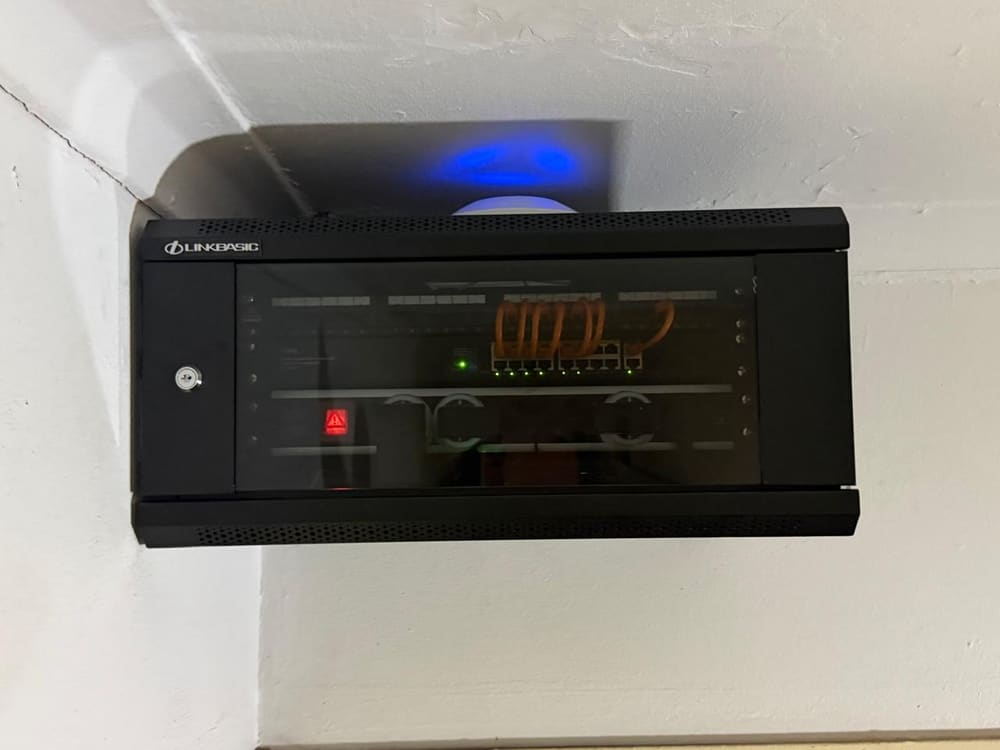
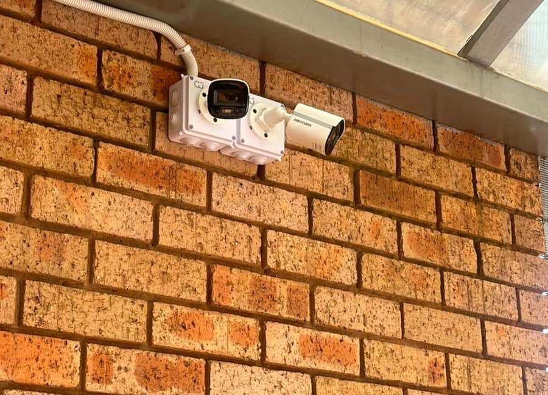
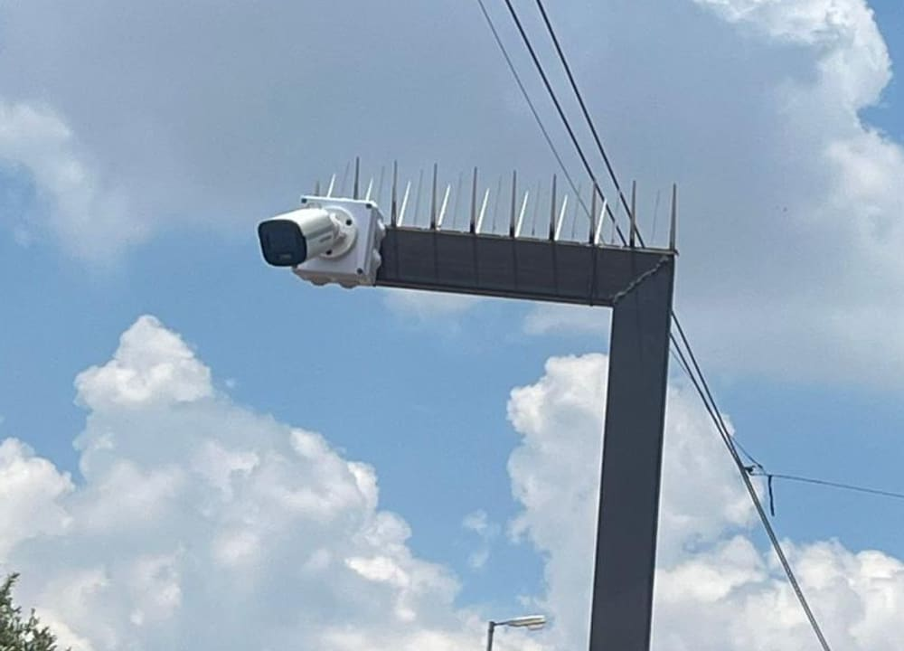

Structured Cabling & Network Infrastructure in Gauteng
Every reliable network starts with the cable behind the wall. CMAXX designs and installs Cat6 and Cat6A structured cabling, Ethernet data points, PoE cabling for access points and cameras, network cabinets and fibre backbones for homes, offices and commercial sites across Gauteng — then tests, labels and documents every link before we hand it over. If you are also reviewing coverage and equipment, see our WiFi & Network Solutions.
- Cat6 & Cat6A copper
- Every link tested and verified
- Labelled and documented handover
- Midrand-based, Gauteng-wide

What Structured Cabling Is
Structured cabling is the planned, permanent wiring system that carries data around a building. Instead of running an individual cable from one device to another whenever something new is added, a structured system routes every outlet back to a central point — a network cabinet or rack — where the connections are terminated onto patch panels and organised in a consistent, repeatable way.
The result is a network you can extend, fault-find and hand over to someone else without guesswork. Every desk outlet, ceiling access point, camera position and TV point runs on the same cable standard, terminates in the same place, and is labelled so that anyone working on the system later knows exactly which cable goes where.
The alternative — cables added one at a time by different people over several years — is what most sites actually have. It works until something breaks, and then nobody can tell which cable serves which room without tracing it by hand.
What a structured system includes
- Horizontal cabling from the cabinet to each outlet position
- Wall, floor or ceiling data points, terminated to a consistent pinout
- Patch panels so devices are connected with short patch leads, not permanent cable
- A network cabinet or rack housing the switches, patch panels and power
- A fibre or copper backbone linking cabinets on larger or multi-building sites
- Labelling and a record of what is connected where
Why the Physical Network Layer Matters
Cabling is the one part of a network you cannot fix with a setting change. When the physical layer is marginal, the symptoms show up somewhere else entirely — and get blamed on the WiFi, the router or the internet line.
Faults that look like something else
A poorly terminated data point, a cable run too close to mains power, or a link that exceeds the supported channel length can produce dropouts, slow transfers and devices that negotiate a lower speed than they should. Every one of those reads as an "internet problem" to the person using it.
Cost lands later, not now
Cable is a small part of an installation budget and the hardest part to change afterwards. Ceilings get closed, walls get painted and floors get laid. Specifying the wrong cable to save a little at install time usually means re-pulling it later at several times the cost.
Everything else depends on it
Access points, IP cameras, VoIP handsets, access control and smart-home controllers all sit on top of the cabling. Upgrading switches or buying faster access points cannot compensate for a cable plant that will not carry the speed or the power those devices need.
Rather than quote a headline failure statistic, we would rather show you the state of your cabling: a site survey identifies the physical-layer issues actually present on your property.
Structured Cabling Services CMAXX Provides
Design, installation, remediation and documentation across residential and commercial sites in Gauteng.
| Service | What it covers | Typical use |
|---|---|---|
| Cat6 & Cat6A cabling | Solid-copper horizontal cabling from cabinet to outlet, terminated and tested. | New builds, renovations, office fit-outs, whole-property rewires. |
| Ethernet data points | Wall, floor-box and ceiling outlets terminated to a consistent standard. | Desks, TV points, study and home-office positions, till points. |
| PoE cabling | Cable runs sized and routed for powered access points, cameras and devices. | Ceiling WiFi access points, IP cameras, VoIP phones, access control. |
| Patch panels & terminations | Punch-down onto patch panels, keystone jacks and RJ45 terminations. | Cabinet consolidation, replacing direct-to-switch permanent runs. |
| Network cabinets & racks | Wall-mount and floor-standing cabinets, mounting, cable management, tidy-ups. | Comms rooms, server rooms, inherited cabinets that need reorganising. |
| Fibre backbones | Fibre links between cabinets, buildings or distant outbuildings. | Multi-building sites, estates, warehouses, runs beyond copper's limit. |
| Outdoor & inter-building runs | UV-stable, correctly rated cable in conduit or trunking with weather protection. | Gatehouses, cottages, workshops, external cameras, outdoor access points. |
| Upgrades & fault finding | Testing existing links, tracing faults, re-terminating or replacing failed runs. | Networks that were working and are now unreliable or partly dead. |
| Testing, labelling & documentation | Every link tested and verified, labelled at both ends, recorded in a handover schedule. | Included on every CMAXX cabling installation. |
Cat5, Cat5e, Cat6 and Cat6A Explained
Category ratings describe how well a cable controls interference and crosstalk, which is what determines the speed a link can reliably carry and over what distance. Higher categories are built to tighter tolerances — they are not simply "faster wire".
| Category | Typical performance | Where it stands today | CMAXX position |
|---|---|---|---|
| Cat5 | Up to 100 Mbps. Superseded and no longer specified for new work. | Legacy only. Still found in older buildings. | Not installed. Replaced during upgrades. |
| Cat5e | Commonly used for 1 Gbps over a standard 100 m channel. | Still functional, but the minimum acceptable standard rather than a future-proof one. | Not our default for new installations. Retained where existing runs test clean. |
| Cat6 | 1 Gbps over a standard 100 m channel, with tighter crosstalk control than Cat5e. Can support 10 Gbps only over shorter runs, and the achievable distance depends on the installation and the surrounding electrical environment — it is not a flat capability across a full-length link. | A sound general-purpose choice for most homes and small offices. | Our standard specification for general residential and light commercial cabling. |
| Cat6A | Designed to carry 10 Gbps over a full 100 m channel when correctly installed, with improved shielding against alien crosstalk between adjacent cables. | The choice where 10 Gbps matters now or is likely to matter later. | Recommended for backbones, server rooms, dense cable bundles and commercial fit-outs. |
Table scrolls horizontally on smaller screens, or stacks into cards on mobile.
CCA Versus 100% Copper
CCA stands for copper-clad aluminium: an aluminium conductor with a thin copper coating. It looks identical to solid copper cable once it is inside a jacket, and it is noticeably cheaper — which is why it turns up in low-cost cable drums and bargain installations.
| Property | CCA (copper-clad aluminium) | 100% copper |
|---|---|---|
| Conductor | Aluminium core with a thin copper cladding. | Solid or stranded copper throughout. |
| Standards position | Not equivalent to compliant copper Category cabling. Category performance specifications are written around copper conductors, and CCA is not an accepted substitute for them. | Meets the conductor requirements the Category specifications are written for. |
| Electrical resistance | Higher than copper, which reduces usable link length and makes performance less predictable. | Lower and consistent, giving predictable performance to the full supported length. |
| Power over Ethernet | Higher resistance means more heat and greater voltage drop under PoE load — a real concern for powered cameras and access points. | Carries PoE load with the voltage drop and thermal behaviour the equipment expects. |
| Mechanical durability | Aluminium is more brittle. Conductors are more prone to breaking at terminations and during pulls. | More ductile and tolerant of termination and installation handling. |
| CMAXX position | Not installed on CMAXX projects. | Specified on every CMAXX structured cabling installation. |
If you are comparing quotes, ask each contractor to state the conductor in writing. A quote that will not confirm 100% copper is the single most useful thing to check.
Solid Versus Stranded Copper
Both are 100% copper — the difference is how the conductor is made, and each is built for a different part of the system. Using the wrong one is a common cause of intermittent faults.
| Property | Solid core | Stranded |
|---|---|---|
| Conductor | A single solid copper wire per conductor. | Multiple thin copper strands twisted together per conductor. |
| Best used for | Permanent horizontal runs inside walls, ceilings, conduit and trunking. | Short patch leads between patch panel and switch, or outlet and device. |
| Flexibility | Stiffer. Holds its route well but does not tolerate repeated flexing. | Flexible and tolerant of repeated bending and movement. |
| Signal performance over distance | Lower attenuation — the better choice for long fixed runs. | Higher attenuation, so it is kept to short lengths. |
| Termination | Punched down onto patch panels and keystone jacks. | Terminated into plugs designed for stranded conductors. |
| Common mistake | Using solid-core cable as a moving patch lead, where flexing eventually fractures the conductor. | Using stranded cable for a long permanent run, giving weak performance at distance. |
UTP Versus Shielded Cabling
UTP — unshielded twisted pair
The twisting of each pair is itself an interference-rejection mechanism, and in ordinary environments it is enough. UTP is easier to pull, easier to terminate, cheaper, and does not depend on a continuous earth path to work correctly.
Specified for: most homes, offices and retail spaces where cable routes can be kept clear of mains power and other significant interference sources.
Shielded — F/UTP, S/FTP and similar
Adds foil or braid around the pairs, the whole bundle, or both. It is the right answer where the environment is electrically noisy or where cable must run near sources it cannot be routed away from.
Specified for: industrial sites, plant and machine rooms, runs alongside heavy power cabling, lift shafts, and dense high-speed bundles where alien crosstalk matters.
The part people get wrong
Shielded cable only helps if the shield is continuous and correctly earthed at the designated point, using shielded jacks, shielded patch panels and shielded patch leads throughout. A shielded cable terminated into unshielded hardware, or earthed at both ends where it should not be, can perform worse than plain UTP. CMAXX specifies shielding where the environment genuinely calls for it — and installs the matching hardware and earthing when we do.
Indoor Versus Outdoor Cabling
Indoor cable used outdoors is one of the most common causes of a link that works for a season and then degrades. Gauteng sun and summer storms are hard on a jacket that was never designed to face them.
Indoor cable
- Jacket designed for a stable, dry interior environment
- Routed in walls, ceiling voids, trunking and conduit
- No UV stabilisation and no water-blocking construction
- Degrades when exposed to direct sunlight and weather
Outdoor-rated cable
- UV-stable jacket that resists sunlight breakdown
- Water-resistant construction for exposed and buried routes
- Installed in conduit or trunking for mechanical protection
- Entry points sealed, and drip loops formed so water runs away from the building
Runs between buildings need more than the right jacket: separately powered structures can sit at different earth potentials, and a long copper run between them carries a surge risk during electrical storms. Where that risk is present we will recommend fibre for the inter-building link instead of copper. Outdoor cable routes are also what make reliable outdoor WiFi coverage possible — an external access point is only as good as the cable feeding it.

Ethernet Distance Limits and Fibre Backbones
A copper Ethernet channel is specified to 100 m in total — and that total includes the patch leads at both ends, not just the cable in the wall. In practice the permanent run between patch panel and outlet is planned at around 90 m, leaving roughly 10 m for patching. Route length is what counts, not the straight-line distance on a plan: cable follows ceilings, walls, risers and conduit, and that is nearly always considerably further than it looks.
Push past the limit and the link does not fail cleanly. It negotiates a lower speed, throws errors under load, or works in cool weather and struggles in the heat — the kind of fault that gets misdiagnosed for months.
Where a run cannot be brought inside the limit, the answer is not a longer cable. It is either a second cabinet closer to the devices, with a backbone link feeding it, or a fibre run to cover the distance directly.
What we do about long runs
- Measure the actual cable route during the survey, not the map distance
- Plan permanent links to leave headroom for patching at both ends
- Place an additional cabinet where a site is too large for a single central point
- Use fibre for backbone and inter-building links beyond copper's reach
- Test every completed link so a marginal run is found before handover, not after
PoE-Ready Infrastructure
Power over Ethernet sends power and data down the same cable, so a ceiling access point or an IP camera needs one cable rather than a cable and a nearby power point. That is what makes clean device placement possible — but it puts real electrical load on the cabling.
Conductor quality is not optional
PoE current runs through the copper itself. Higher-resistance conductors — CCA in particular — mean more heat in the bundle and more voltage drop along the run, so a device at the far end may under-power or reset intermittently.
Bundling and heat
Many powered cables tied tightly together run warmer in the middle of the bundle. We plan bundle sizes and routes with that in mind rather than pulling everything into one dense bunch.
Plan the budget, not just the port
The switch has to supply the total power drawn by everything connected to it, with headroom for what gets added later. We size that at design stage against the devices you actually intend to run.
PoE cabling is what most office networks are ultimately built around — ceiling access points, desk phones and cameras all depend on it. If you are planning coverage at the same time as cabling, see Business & Office WiFi Solutions, and for powered camera positions see CCTV & Security Solutions — cameras and access points share the same PoE cabling infrastructure.

Data Points, Terminations and Patch Panels
A cable run is only as good as its two ends. Termination is where most avoidable performance loss is introduced, and it is the part that is invisible once the faceplate goes on.
What good termination looks like
- Pair twist maintained right up to the termination point, not unwound for convenience
- The same pinout standard used consistently at every point on the site
- Jacket stripped back only as far as needed, so pairs stay protected
- Bend radius respected behind the faceplate and inside the cabinet
- Every outlet and every panel port labelled to match the handover schedule
Why patch panels
Terminating permanent cable straight into a switch means every move, change or switch replacement disturbs the permanent cabling. Landing everything on a patch panel instead means the fixed cable is terminated once and never touched again — day-to-day changes happen on short patch leads that are easy to move, replace and trace.
Not sure which specification your site needs?
Cable category, conductor, shielding and route all depend on the building and the devices going into it. A CMAXX site survey settles those questions before anything is quoted or pulled — we assess the existing infrastructure, the devices you need to support, the viable cable routes and what you are likely to add later.
Network Cabinets and Server Racks
The cabinet is where a structured system either proves itself or falls apart. It is also the first thing a new IT provider looks at to judge whether the network was installed properly.
What CMAXX installs
- Wall-mounted cabinets for homes, small offices and satellite comms points
- Floor-standing racks for server rooms and larger commercial sites
- Patch panels, cable management, shelving and rack-mounted power
- Ventilation and cable entry planned for the equipment going in
- Lockable enclosures where the cabinet sits in shared or public space
How we lay a cabinet out
- Permanent cabling terminated to patch panels, never straight into switches
- Patch leads run through management, cut to length, and colour-grouped by function
- Panel ports and outlets labelled to a single consistent scheme
- Space and power left free for the next switch or the next batch of devices
- A handover schedule recording what is connected where
Inherited a messy cabinet? Ask CMAXX for a network rack clean-up and documentation assessment.
Book a Cabling Site SurveyFibre Cabling for Backbones and Longer Distances
Fibre carries data as light rather than electrical current. That changes what is possible on a site in three specific ways.
Distance
Fibre runs far beyond the 100 m copper channel limit, which is what makes a single coherent network possible across an estate, a warehouse, or a property with outbuildings well away from the main house.
Electrical isolation
Because it carries no current, a fibre link between separately powered buildings does not bridge earth potentials and does not provide a path for surges — a genuine advantage on Gauteng sites during storm season.
Immunity to interference
Fibre is unaffected by the electrical noise that limits copper, so it can follow routes near plant, machinery and heavy power distribution where copper would struggle.
Where we use fibre
- Backbone links between network cabinets on multi-cabinet sites
- Links between separate buildings, cottages, gatehouses and workshops
- Runs to positions that measure beyond copper's supported distance
- High-throughput links between a server room and distribution points
- Routes through electrically noisy plant or industrial areas
Fibre is a backbone technology, not a replacement for copper to every outlet. A typical CMAXX design uses fibre for the long links between cabinets and Cat6 or Cat6A copper for the horizontal runs out to devices, because copper carries PoE and fibre does not.
Existing-Network Upgrades and Fault Finding
Most of the cabling work we do is not a new build. It is a network that used to be fine and has become unreliable, or one that has been extended so many times that nobody knows what is connected to what.
What we typically find
- Damaged or partially broken conductors in a run that still half-works
- Terminations with the twist unwound too far, or wired to a mixed pinout
- Links that exceed the supported channel length once the real route is measured
- CCA cable pulled in by a previous contractor and failing under PoE load
- Indoor cable used on an exposed outdoor route and degraded by sun and rain
- Cable routed alongside mains power for a long parallel stretch
- Cabinets with no labelling, so every fault turns into a tracing exercise
How we work through it
- Test the existing links and identify which ones actually pass
- Trace and locate faults rather than replacing cable speculatively
- Re-terminate where the fault is at the ends, and re-pull where the cable itself is damaged
- Keep and reuse every run that tests clean — we do not rip out working cabling
- Consolidate the cabinet onto patch panels with proper management
- Label and document the result so the next fault takes minutes, not hours
If the symptoms are coverage- or speed-related rather than clearly physical, start with WiFi assessment and troubleshooting — we assess both the wireless and the wired layer, because the cause is frequently in the cabling behind the access point rather than in the access point itself.
Testing, Labelling and Documentation
A cable that has not been tested is an assumption. Every link CMAXX installs is tested and verified before handover, and the result is recorded — not left for the first fault to discover.
Tested and verified
Each completed link is tested for correct wiring and continuity across all pairs, and verified to carry the intended service before we sign it off. Marginal runs are corrected during the installation rather than handed over.
Labelled at both ends
Every outlet and its matching patch-panel port carry the same identifier, using one consistent scheme across the site, so a cable can be identified from either end without tracing.
Documented handover
You receive a schedule of installed links, outlet locations, panel port assignments and cabinet layout — so any competent technician, ours or yours, can work on the system later.
On the word "certified"
Certification has a specific meaning: testing each link with a certification analyser against the relevant Category performance standard and issuing the resulting report. That is available as a defined scope on projects that require it — commonly commercial fit-outs and work carried out under a main contractor. Where it is not part of the agreed scope, we say what we actually do: every link is tested and verified, and the results documented. We will confirm in writing which of the two applies to your project before work starts.
Residential and Commercial Use Cases
Homes and residential estates
- Data points to studies, home offices, bedrooms and TV positions
- Cabled ceiling access points to give even coverage through a double-storey or a home with thick walls — see Home WiFi Solutions
- PoE runs to external cameras, gate stations and intercoms
- Cabling for smart home controllers, hubs and automation panels that work better wired than wireless
- Links out to cottages, flatlets, garages and workshops
- Cabling planned in during a build or renovation, while walls are still open
Offices, retail and commercial sites
- Desk and floor-box data points for office fit-outs and reconfigurations
- PoE cabling for ceiling access points, VoIP handsets and access control
- Comms rooms, cabinets and patch panels built to be extended
- Till points, back-of-house and stockroom positions for retail and hospitality — often alongside public and guest WiFi
- Camera cabling for CCTV and security systems
- Cabling designed with managed WiFi and network support in mind, so ongoing support has something documented to work from
- Sector-specific requirements across the industries listed under Industries We Serve
The CMAXX Installation Process
Six stages, in order, on every structured cabling project.
| Stage | What happens | What you get |
|---|---|---|
| 1. Assess | On-site survey of the building, existing cabling, cabinet position and viable cable routes. We test what is already installed and measure real route lengths. | A clear picture of what exists, what is reusable and what is constraining the design. |
| 2. Design | Outlet positions, cabinet location, cable routes, backbone links and device positions are planned together, with future requirements accounted for. | A layout showing where every point goes and how the site is served. |
| 3. Specify | Cable category, conductor, shielding, indoor or outdoor rating, panels, cabinet and PoE budget are specified against the design. | A written specification and quotation, with the materials stated — not "network cable". |
| 4. Install | Cable pulled to planned routes with bend radius and separation from power respected, outlets fitted, cabinet mounted, terminations made. | A physically installed system built to the agreed specification. |
| 5. Test & Label | Every link tested and verified, faults corrected before sign-off, and every outlet and panel port labelled to one consistent scheme. | A cable plant proven to work, with both ends of every run identifiable. |
| 6. Commission & Handover | Switches and devices connected and confirmed live, cabinet dressed and closed out, documentation compiled and walked through with you. | A working network plus the handover pack: link schedule, labelling scheme and cabinet layout. |
Why Choose CMAXX for Structured Cabling
We are a Gauteng network specialist, not a general contractor adding cabling as a sideline. The cabling, the wireless and the equipment on top of it are all handled by the same team.
We survey before we quote
Specification follows the building and the devices, not a price list. The survey is what makes the quote accurate — and what stops the wrong cable going into a wall.
100% copper, stated in writing
We do not install CCA. The cable category and conductor are named in the quotation so you know exactly what is going in, and can compare quotes on the same basis.
Tested, labelled, documented
Every link is tested and verified, labelled at both ends and recorded in a handover schedule. That documentation is yours, and it works for any technician you use later.
One team across the whole network
Cabling, WiFi, CCTV and smart-home infrastructure are delivered by the same people, so the cable plant is designed around the devices that will actually run on it.
Built to be extended
Cabinets, panels and PoE budgets are planned with room to grow, so the next access point or camera is an addition rather than a rebuild.
Ongoing support if you want it
Cabling can be a once-off project or the foundation for managed WiFi and network support. Either way you keep the documentation. Our completed projects are shown under Case Studies.
Structured Cabling Across Gauteng
CMAXX is based in Midrand and installs structured cabling and network infrastructure across Gauteng — including Johannesburg, Sandton, Centurion, Pretoria, Randburg, Roodepoort, Fourways, Bryanston, Kempton Park, Benoni, Boksburg, Edenvale and the surrounding areas. Being centrally located in Midrand keeps us within reasonable reach of both the Johannesburg and Pretoria sides of the province for surveys, installations and follow-up work.
Residential, commercial and multi-building sites are all in scope, and we travel to sites outside these areas by arrangement. For our full coverage list, see Areas We Serve.
Structured Cabling FAQs
The questions we are asked most often about cabling, cable types, distance, PoE and what a CMAXX installation includes.
What is structured cabling?
It is a planned, permanent cabling system in which every data outlet on a property runs back to a central cabinet and terminates on a patch panel, using one consistent cable standard and one labelling scheme. It replaces ad-hoc cables added one at a time, and makes the network extendable, traceable and documentable.
Do I really need structured cabling if I already have WiFi?
Yes, in most cases. WiFi access points still need a cable behind them to carry data and, usually, power. Wireless coverage is limited by where you can physically put an access point, and that is determined by where the cabling reaches. Good cabling is what makes good WiFi possible rather than an alternative to it.
What is the difference between Cat6 and Cat6A?
Both are copper Category cables, but Cat6A is built to tighter tolerances with better control of crosstalk between adjacent cables. Cat6 handles 1 Gbps over a standard 100 m channel comfortably; it can support 10 Gbps only over shorter runs, and how short depends on the installation and the electrical environment around it. Cat6A is designed to carry 10 Gbps over a full 100 m channel when correctly installed. Cat6A is thicker, less flexible and more expensive to install.
Should I install Cat6 or Cat6A?
Cat6 is our standard specification for most homes and light commercial work. We recommend Cat6A where 10 Gbps matters now or is likely to later — backbone links, server rooms, dense bundles of cable running together, and commercial fit-outs where the cabling has to last through several equipment cycles. Because re-pulling cable is far more expensive than specifying it correctly the first time, the decision is worth making at design stage.
Is Cat5e still acceptable?
Existing Cat5e that tests clean will carry 1 Gbps and does not need replacing just because a newer category exists. We do not specify it for new installations, though — the cost difference against Cat6 is small relative to the labour of installing either, and Cat6 gives more headroom.
What is CCA cable and why do you avoid it?
CCA is copper-clad aluminium: an aluminium conductor with a thin copper coating. It is not equivalent to compliant copper Category cabling, because the Category performance specifications are written around copper conductors. Its higher resistance reduces usable link length, makes performance less predictable, and causes more heat and voltage drop under PoE load. It is also more brittle and more likely to break at terminations. CMAXX does not install it.
How can I tell whether a quote includes CCA cable?
Ask for the conductor to be stated in writing. A compliant quote will say "100% copper" alongside the cable category. If a quotation only says "network cable" or "Cat6 cable" without naming the conductor, ask for confirmation before accepting it — the price difference between CCA and copper is one of the main reasons quotes for the same job vary so widely.
What is the difference between solid and stranded cable?
Solid-core cable has one solid copper wire per conductor and is used for permanent runs inside walls, ceilings and conduit — it has lower attenuation over distance. Stranded cable has multiple thin strands per conductor, is far more flexible, and is used for short patch leads. Using solid cable as a patch lead eventually fractures the conductor through flexing; using stranded cable for a long fixed run gives weaker performance at distance.
Do I need shielded cable?
Usually not. Unshielded twisted pair is appropriate for most homes, offices and retail spaces, where cable routes can be kept clear of significant interference. Shielded cable is the right answer in electrically noisy environments — industrial sites, plant rooms, runs that must follow heavy power cabling — and in dense high-speed bundles. Shielding only works if the shield is continuous and correctly earthed through shielded jacks, panels and patch leads, so it has to be specified as a complete system rather than as a cable choice on its own.
How far can an Ethernet cable run?
A copper Ethernet channel is specified to 100 m in total, including the patch leads at both ends. In practice we plan the permanent run at around 90 m and leave the remainder for patching. What counts is the actual cable route — through ceilings, walls and risers — not the straight-line distance on a plan, which is almost always shorter.
What happens if a cable run is too long?
It rarely fails outright. More often the link negotiates a lower speed, produces errors under load, or behaves inconsistently as temperature changes — which is why over-length runs are so often misdiagnosed as WiFi or internet problems. The fix is a second cabinet closer to the devices, or a fibre link to cover the distance.
Can you cable to a cottage, outbuilding or gatehouse?
Yes. For shorter distances we use outdoor-rated copper in conduit. For longer runs, or where the buildings are separately powered, we generally recommend fibre — it exceeds copper's distance limit and, because it carries no current, does not bridge earth potentials between buildings or provide a surge path during storms.
Can indoor cable be used outdoors if it is inside conduit?
We do not recommend it. Conduit provides mechanical protection but not UV protection or water resistance, and moisture does get into conduit. Indoor jackets degrade in sunlight and heat, so an indoor cable on an outdoor route typically works at first and deteriorates over following seasons. Outdoor-rated cable in conduit is the correct combination.
What is PoE and do I need it?
Power over Ethernet delivers power and data over the same cable, so a device needs only one cable rather than a cable plus a nearby power point. You need it if you are installing ceiling WiFi access points, IP cameras, VoIP handsets, intercoms or access control — all of which are typically PoE-powered. It is the main reason cable and conductor quality matter as much as they do.
Does PoE need special cable?
Not a special category, but it does need genuine copper conductors. PoE current runs through the copper itself, so higher-resistance conductors such as CCA produce more heat within the bundle and more voltage drop along the run, which can leave a device at the far end under-powered or resetting intermittently. Bundle size and routing also need planning, because tightly packed powered cables run warmer in the middle of the bundle.
How many data points do I need?
It depends on the property and what will run on it, which is what the survey establishes. As a working principle we plan for the devices you have now plus the ones you are likely to add, because adding a point later costs far more than including it in the original installation. A typical home office position gets more than one, and access point and camera positions are planned as part of the same count.
Why terminate onto a patch panel instead of straight into the switch?
Because permanent cable should be terminated once and then left alone. With a patch panel, every move, change and switch replacement happens on short patch leads rather than disturbing the cable in the wall. It also gives you one place where every run is landed, labelled and traceable.
Do you install network cabinets and racks?
Yes — wall-mounted cabinets for homes and small offices, and floor-standing racks for server rooms and larger sites, including patch panels, cable management, shelving, rack-mounted power, ventilation planning and lockable enclosures where the cabinet sits in shared space.
Can you clean up an existing messy cabinet?
Yes, and it is one of our more common jobs. We test what is in there, re-terminate onto patch panels where runs go straight into switches, replace over-long patch leads with correctly sized ones, route everything through management, label both ends of every link and hand over documentation. Ask for a network rack clean-up and documentation assessment.
Do I need fibre?
Most properties do not need fibre to every outlet, and copper remains the right choice for horizontal runs because it carries PoE and fibre does not. Fibre is a backbone technology: it earns its place linking cabinets, connecting separate buildings, covering runs beyond copper's 100 m limit, and following routes through electrically noisy areas.
Do you test the cabling you install?
Yes. Every link is tested and verified before handover — checked for correct wiring and continuity across all pairs and verified to carry the intended service. Any marginal or failed run is corrected during the installation rather than handed over.
Is every CMAXX project certified?
No, and we would rather be precise about that. Certification means testing each link with a certification analyser against the relevant Category standard and issuing the resulting report — it is a defined scope with its own cost, usually required on commercial fit-outs and work under a main contractor. It is available on request. Where it is not part of the agreed scope, every link is still tested and verified and the results documented. We confirm in writing which applies to your project before work begins.
What documentation do I receive?
A handover pack covering the schedule of installed links, outlet locations, patch-panel port assignments, the labelling scheme and the cabinet layout. It is written so that any competent technician can work on the system later, whether that is us or someone else.
Can you work with my existing cabling instead of replacing everything?
Yes, and that is normally the starting point. We test what is installed, keep and reuse every run that passes, and replace only what genuinely fails or cannot meet the requirement. Ripping out working cabling is expensive and rarely necessary.
Will you need to damage walls and ceilings?
We plan routes to use existing ceiling voids, risers, conduit, trunking and roof spaces wherever they exist, which keeps the work non-invasive on most properties. Where an access point is unavoidable we agree the position with you in advance and make good afterwards. On new builds and renovations we would rather cable before walls close — it is quicker, tidier and cheaper.
Can cabling be installed during a build or renovation?
That is the ideal time. First fix while walls and ceilings are open, second fix for outlets and terminations once surfaces are finished. It costs less than retrofitting, allows a far cleaner design, and means you are not choosing device positions around where cable happens to be able to reach.
How long does an installation take?
It depends on the number of points, the building and how accessible the routes are. A small residential job is usually a day or two; office fit-outs and multi-building sites take longer. We give a schedule with the quotation once the survey has established the point count and the routes.
Do you work on residential as well as commercial sites?
Both. The same standards apply either way — the difference is scale, cabinet size and the density of points, not the quality of the cable or the way it is terminated, tested and documented.
Which areas do you cover?
We are based in Midrand and work across Gauteng, including Johannesburg, Sandton, Centurion, Pretoria, Randburg, Roodepoort, Fourways, Bryanston, Kempton Park, Benoni, Boksburg and Edenvale. Sites outside these areas are covered by arrangement. See Areas We Serve for the full list.
How do I get started?
Book a cabling site survey. We assess the existing infrastructure, the devices you need to support, the viable cable routes and your likely future requirements, then come back with a specification and a quotation that names the cable category and conductor rather than leaving them unstated.
Still unsure which cable or network design your property needs? Book a CMAXX cabling site survey and we will assess the existing infrastructure, required devices, cable routes and future requirements before recommending a solution.
Book a Cabling Site Survey
Tell us what the building is, what needs to connect and what you are planning to add. We will survey the site, specify the cable and the routes properly, and quote against a design rather than a guess — with 100% copper, tested and verified links and a documented handover on every installation.
Midrand, Gauteng · 010 140 3660 · 083 212 7065 · info@cmaxxwifisolutions.co.za